How to use Clinilog every day: for clinic nurses (staff) and clinic administrators.
Prepared for Valencia National High School · School Clinic
Clinilog version 0.1.0 · November 2026
Student health information is protected under RA 10173 (Data Privacy Act of 2012).
Contents
1. About Clinilog{{p:s1}}
2. Getting started: install, open and log in{{p:s2}}
3. The everyday clinic flow{{p:s3}}
4. Dashboard{{p:s4}}
5. Students{{p:s5}}
6. Clinic Visits{{p:s6}}
7. Search{{p:s7}}
8. Reports{{p:s8}}
9. Administrator: first-time setup{{p:s9}}
10. User Accounts (admin){{p:s10}}
11. Subscription (admin){{p:s11}}
12. Activity Log (admin){{p:s12}}
13. Settings: sections and medicines (admin){{p:s13}}
14. Working without internet (offline mode){{p:s14}}
15. Plans, limits and an expired subscription{{p:s15}}
16. Rules for each field{{p:s16}}
17. Troubleshooting and questions{{p:s17}}
18. Privacy and good practice{{p:s18}}
19. Quick reference{{p:s19}}
How to read this guide. Sections 1–8 are for everyone. Sections 9–13 are for administrators only. Each section starts with a badge:
ALL USERSSTAFFADMIN.
The screenshots use sample students, not real records.
1.About Clinilog
Clinilog is the school clinic's records system. Clinic staff use it to keep student health profiles, record clinic visits (complaint, treatment and medicines given), search past records and print reports. Students don't use the app; they tell the nurse their complaint and the nurse records it.
Records are kept safely on Clinilog's server, so every clinic PC sees the same, up-to-date information. Each clinic PC also keeps its own copy of the school's records, so if the internet goes down you can keep working: log in, look up students, record visits and print reports. Everything done offline uploads automatically when the connection returns (see section 14).
Two kinds of users
What you can see and do depends on the account you log in with, not on the computer.
What you can do
Staff (nurse)
Admin
See the Dashboard
✓
✓
Find, add and edit students
✓
✓
Record clinic visits
✓
✓
Edit a visit
Only visits you recorded
Any visit
Search records and view reports (print / save as PDF)
✓
✓
Delete a student or a visit
–
✓
Manage user accounts (add, disable, reset passwords)
–
✓
Renew or change the subscription plan
–
✓
View the Activity Log
–
✓
Manage sections and medicines (Settings)
–
✓
The sidebar
Staff sees 5 items
Dashboard: today at a glance
Students: student records
Clinic Visits: record and view visits
Search: find records
Reports: summaries, print, PDF
Admin sees 9 items
The same 5, plus:
User Accounts: who can log in
Subscription: plan and renewal
Activity Log: who did what
Settings: sections and medicines
At the bottom of the sidebar you'll always see the connection card (Online / Offline, how many changes are waiting to upload, and when the records on this PC were last updated), your name and role, and Log out.
2.Getting started: install, open and log in ALL USERS
Installing Clinilog on a clinic PC
Copy the installer Clinilog_0.1.0_x64-setup.exe to the PC and double-click it.
If Windows shows "Windows protected your PC", click More info, then Run anyway. (This appears because the installer isn't signed with a paid certificate; it's safe.)
Follow the installer. When it finishes, open Clinilog from the Start menu or the desktop shortcut.
Install it on every clinic PC that needs it; all of them share your school's records.
Connecting the PC to your school (first time only)
The first time Clinilog opens on a PC, it asks for your school code, a short code from your Clinilog provider (for example VNHS).
Type the School code. Capital letters don't matter.
Click Continue. Clinilog finds your school and shows its name above the login boxes.
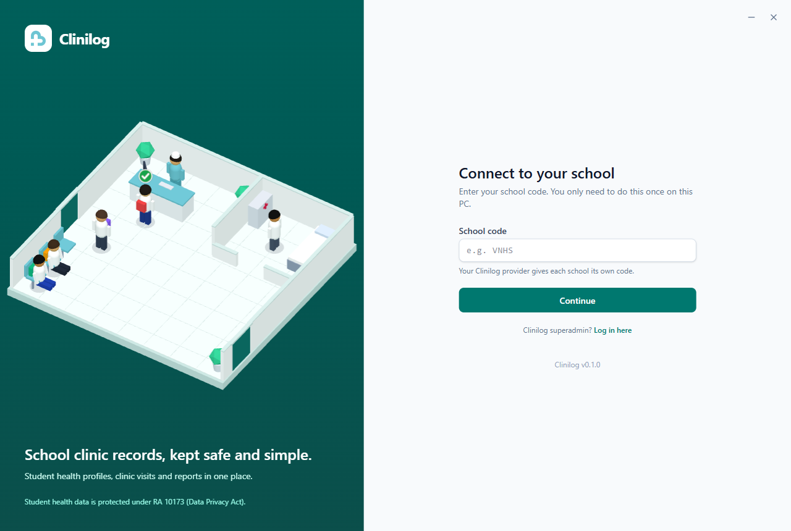
First launch: enter your school code.
The PC remembers the school, so you won't be asked again. If the wrong school shows on the login screen, click Change school and enter the right code. (This isn't allowed while visits recorded on that PC are still waiting to upload.)
The Clinilog window
Clinilog opens full screen. There is no Windows title bar; use the two small buttons in the top-right corner instead:
– Minimize: hides Clinilog to the taskbar (click its icon to bring it back).
× Close: exits Clinilog. If visits are still waiting to upload, it asks first; they stay safely on the PC.
Logging in
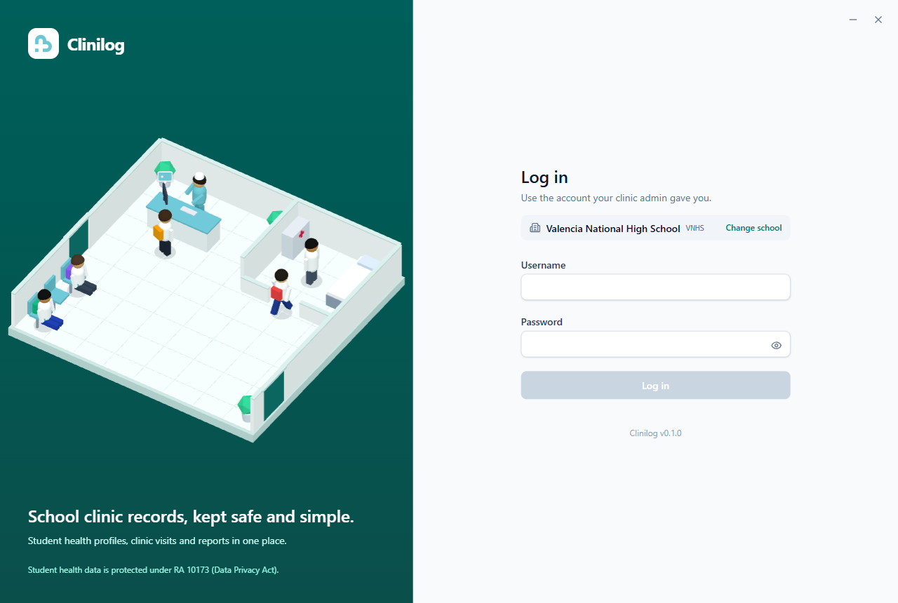
The login screen, showing your school's name. The left side shows a short animation of the clinic flow.
If you see "Connecting to server…", wait until it disappears. The first time each day it can take up to about a minute while the server wakes up. This is normal. If the PC has no internet, Clinilog says "You're offline" straight away instead, and you can still log in (section 14).
Type your Username (capital letters don't matter: Nurse_Joy = nurse_joy).
Type your Password. Passwords are case-sensitive. Clinilog warns you if Caps Lock is on. Click the eye icon to show or hide what you typed.
Click Log in. The button stays grey until both boxes are filled.
5 wrong passwords lock the account for 5 minutes. A countdown shows how long to wait. An administrator can unlock it sooner by resetting the password (section 10).
Forgot your password? Ask your clinic administrator to reset it. Staff can't reset their own password.
Logging out
Click Log out at the bottom of the sidebar when you finish or leave the PC. If changes are still waiting to upload, Clinilog tells you first; they are kept on the PC and upload the next time you log in while online. Logging out doesn't remove the school's records from the PC, so the next person can still log in and work if the internet is down.
3.The everyday clinic flow ALL USERS
This is what happens when a student comes to the clinic. The next sections explain each screen in detail.
1 · A student comes to the clinicThe student tells the nurse their name or LRN and what's wrong.
2 · Find the studentStudents page, or type the name / LRN straight into the New visit form.
Already registered
Open their recordClick Record visit on their profile.
First clinic visit ever
Add the studentStudents → Add student (LRN, name, birthdate, section).
3 · Record the visitComplaint, treatment and any medicines given. Date, time and "attended by" fill in automatically.
4 · SaveOnline: saved on the server immediately. Offline: saved on this PC and uploaded automatically later.
5 · Follow up any timeDashboard and Clinic Visits show today's visits; the student's profile shows their full history.
6 · End of month / yearReports: visits per month and most common complaints. Print or save as PDF.
Fastest way to record a visit: click New visit on the Dashboard, type the student's name or LRN in the Student box, pick them from the list, fill in the complaint and treatment, and click Save visit.
4.Dashboard ALL USERS
The Dashboard is the first page after logging in. It shows the day at a glance.
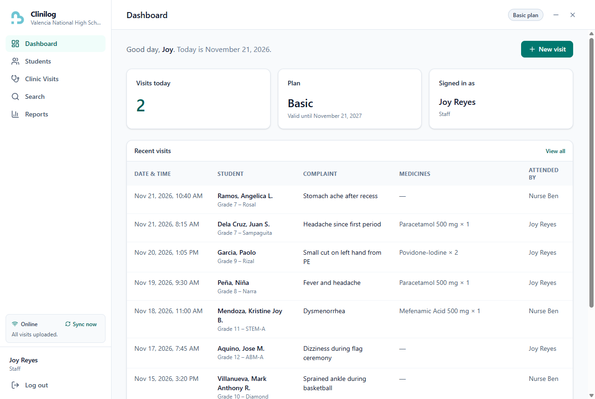
Dashboard as a staff member (5 sidebar items).
Visits today: how many students visited the clinic today. Click the number to open today's visits.
Plan: your school's current subscription plan and until when it's valid.
Signed in as: your name and role.
Recent visits: the 10 latest visits. Click any row to open it, or View all for the full list.
New visit (top right) starts recording a visit straight away.
The Dashboard refreshes itself every minute. If changes are waiting to upload (offline), a Waiting to upload box appears here too.
5.Students ALL USERS
Every student who visits the clinic has one record: their LRN, name, gender, birthdate and section, plus their full visit history.
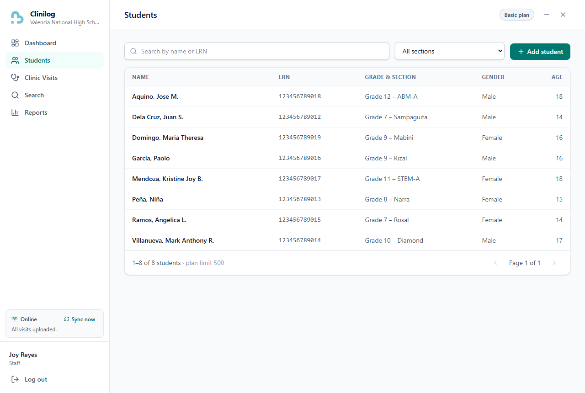
The Students list.
Finding a student
Type in the search box: part of a name in either order (juan dela or dela cruz, juan) or the first digits of the LRN. The list updates as you type.
Use All sections to show one section only.
Click a student's name or row to open their profile.
The bottom of the list shows how many students there are and the page buttons. On the Basic plan it also shows the plan limit (500 students).
Adding a student
Click Add student.
Type the LRN: exactly 12 digits. The counter shows how many you've typed (for example 8/12 digits). As soon as all 12 are in, Clinilog checks whether that LRN is already registered.
Fill in First name, Middle name (optional) and Last name. Letters (including ñ and accents), spaces, hyphens, apostrophes and periods are allowed.
Choose the Gender and the Birthdate (the calendar only allows ages 4–25).
Choose the Grade & section. If the section isn't in the list, ask your administrator to add it (Settings).
Click Save student. The button stays grey until every field is valid; any problem is shown in red under the field.
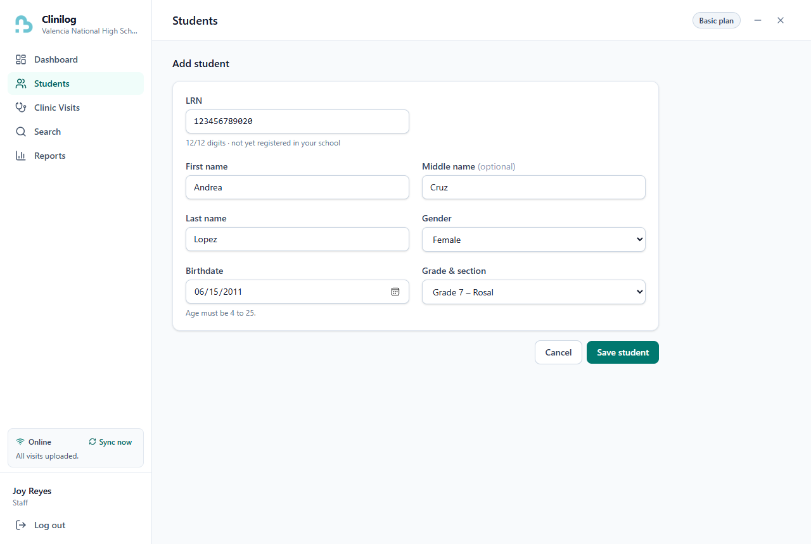
A completed Add student form. "Not yet registered in your school" confirms the LRN is free.
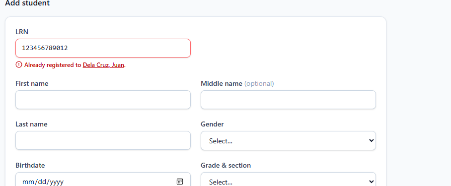
If the LRN is already used, Clinilog says who has it (click the name to open that student) and won't save.
Possible duplicate. If another student has the same first name, last name and birthdate, Clinilog shows a Possible duplicate message listing them. Check it's really a different person, then click Save anyway; or Cancel and use the existing record.
A student's profile
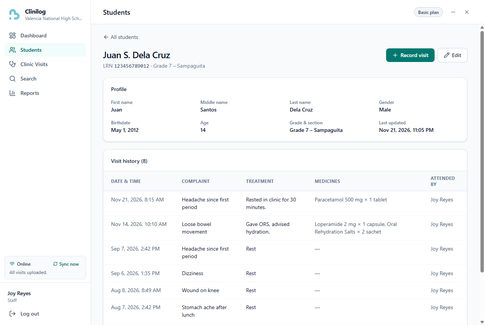
Profile with age (calculated from the birthdate) and full visit history.
Record visit opens a new visit with this student already filled in.
Edit changes their details (same rules as adding).
Visit history lists every clinic visit, newest first. Click a visit to open it.
DeleteADMIN: removes the student after you confirm. A student who has any clinic visits can't be deleted, so health records are never lost by accident.
Note: each time someone opens a student's profile, it's recorded in the Activity Log (section 12).
6.Clinic Visits ALL USERS
A visit records one trip to the clinic: who came, the complaint, the treatment, medicines given, the date and time, and who attended.
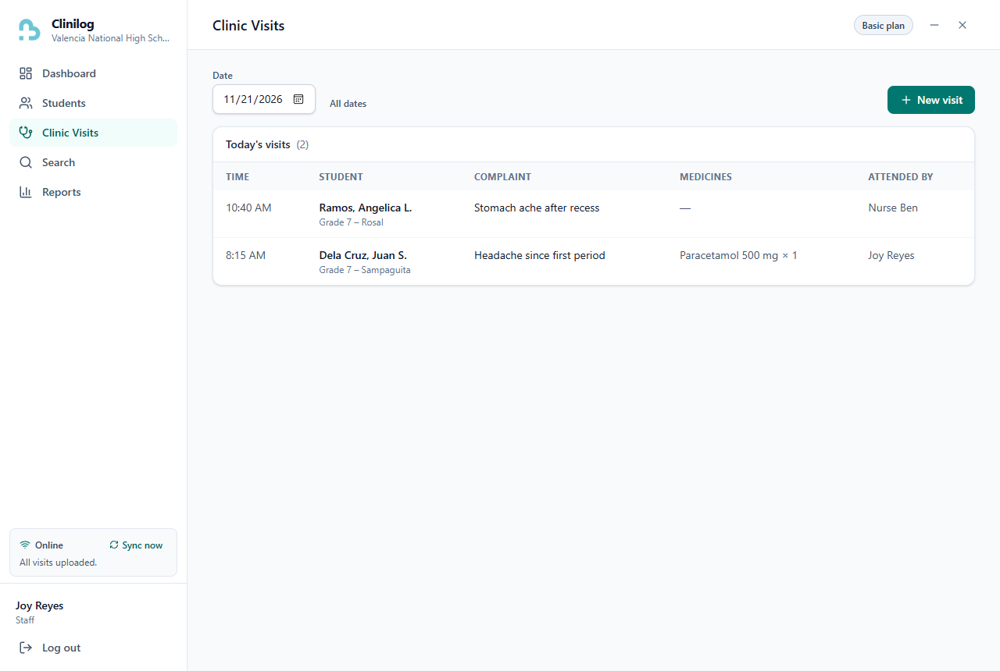
The Clinic Visits page shows today's visits by default.
Use the Date box to see another day, Today to go back, or All dates for everything (newest first).
Click any visit to open its details.
Recording a new visit
Click New visit (on this page, the Dashboard, or a student's profile).
Student: type part of the name or the LRN, then click the right student in the list (or use the arrow keys and Enter). To change your choice, click the × on the selected student.
The date and time and Attended by (you) are filled in automatically when you save.
Complaint: what the student says is wrong (at least 3 characters).
Treatment: what was done (for example "Rested 30 minutes, gave water").
Medicines given (optional): click Add medicine, choose the medicine and type the quantity (a whole number from 1 to 100; the unit, e.g. tablet, is shown next to it). Add more lines if needed; the bin icon removes a line.
Click Save visit.
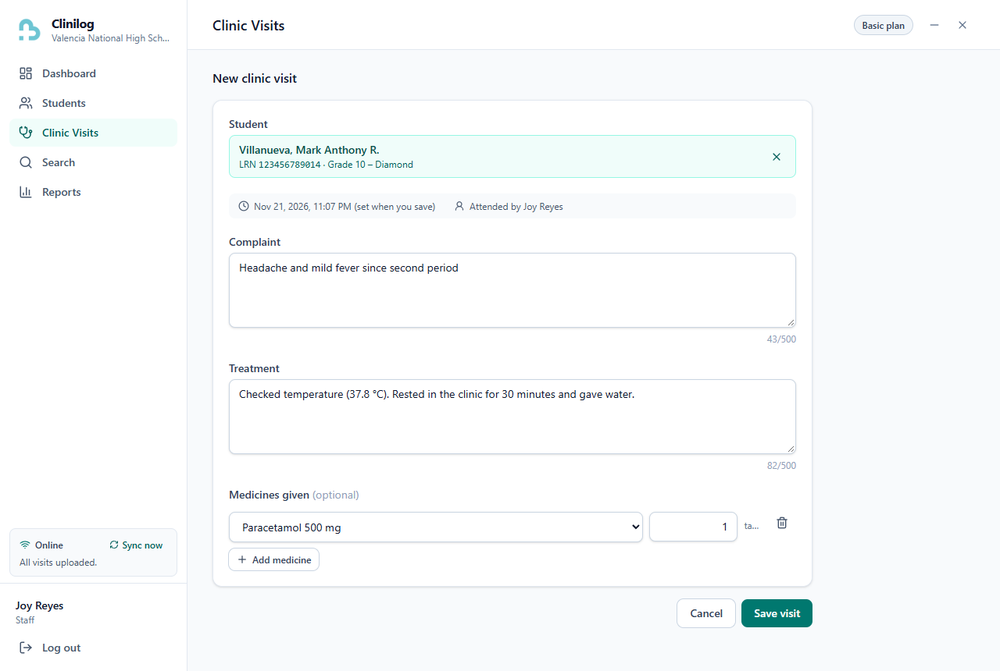
A new visit ready to save, with one medicine.
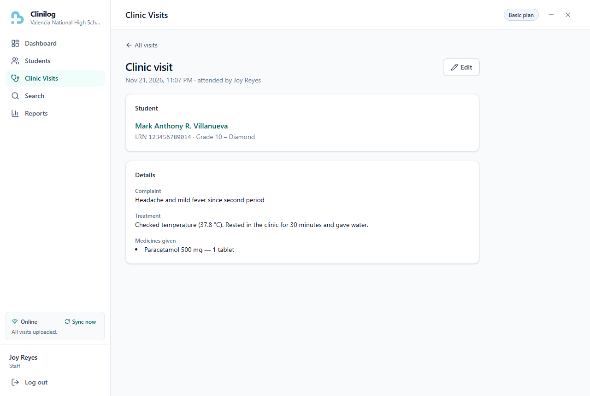
After saving: the visit details.
Editing or deleting a visit
Edit changes the complaint, treatment and medicines. Staff can edit only visits they recorded; administrators can edit any visit.
The student, date/time and "attended by" can't be changed. If a visit was recorded for the wrong student, an administrator deletes it and it's recorded again.
DeleteADMIN: removes the visit after you confirm.
7.Search ALL USERS
Search finds students or clinic visits using filters. Choose what to find with the tabs at the top: Students or Clinic visits.
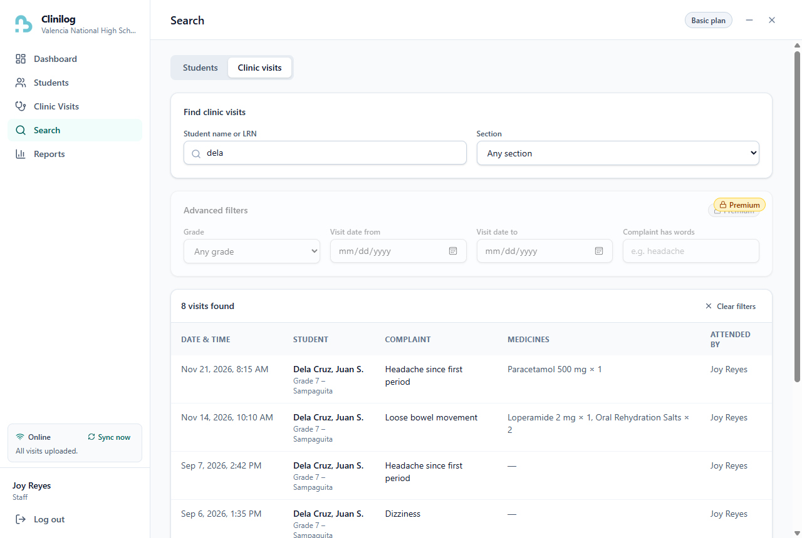
Searching clinic visits by student name. On the Basic plan, Advanced filters are locked.
Basic search (all plans)
Student name or LRN: same as on the Students page.
Section: limit results to one section.
Results appear as you type. Clear filters resets everything. If you open a result and go back, your search is still there.
Advanced filters (Premium plan)
Grade: students or visits from one grade level.
Visit date from / to: visits within a date range (both days included).
Complaint has words: visits whose complaint contains all the words you type, in any order (for example headache, or fever headache).
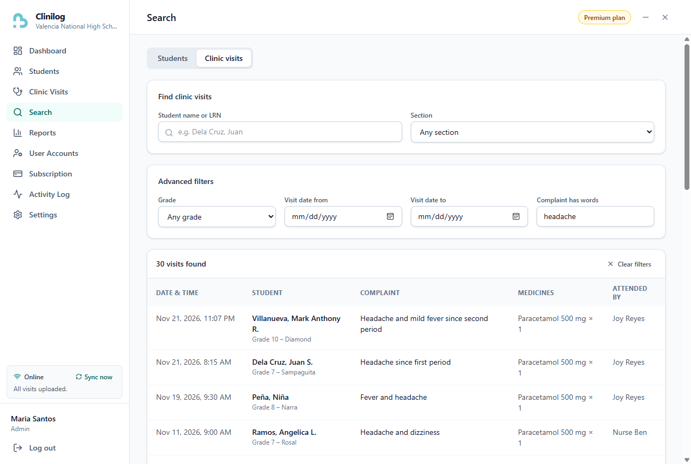
On Premium: every visit with "headache" in the complaint.
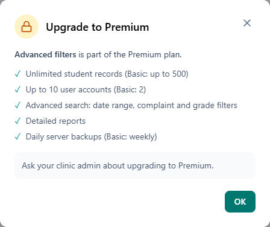
Clicking a locked Premium item explains what Premium adds. Staff are asked to talk to their admin; admins see a See plans button.
8.Reports ALL USERS
Reports summarise clinic activity for a month or a whole year, ready to print or save as a PDF.
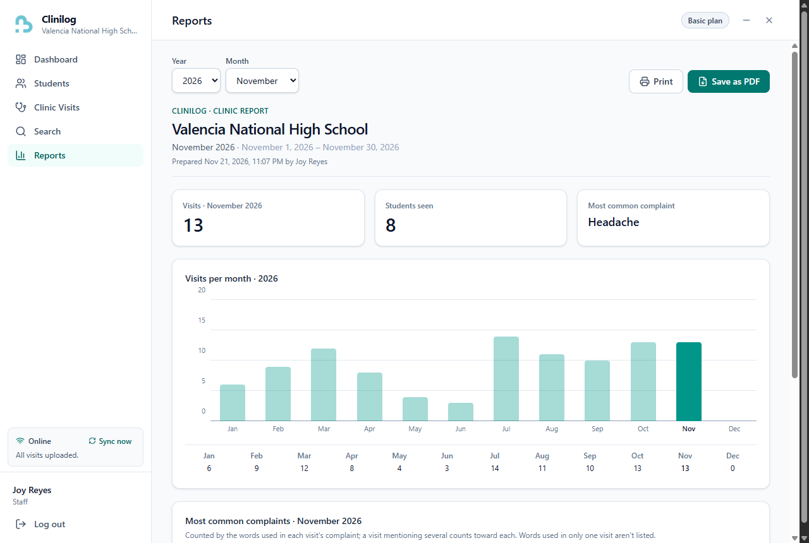
A monthly report (November) with the visits-per-month chart for the year.
Choose the Year and the Month (or Whole year).
Read the summary: Visits, Students seen and the Most common complaint for that period.
Visits per month always shows the whole year; the chosen month is highlighted. Point at a bar to see its number; the table under the chart lists every month.
Most common complaints lists the words used most often in complaints (for example "headache"), with how many visits mentioned each.
Click Print to print, or Save as PDF and choose where to save the file.
How complaints are counted: Clinilog looks at the words in each complaint, ignoring filler words like "since" or "ang". Two-word complaints such as "stomach ache" are kept together, and words that appear in only one visit aren't listed. Short, consistent complaints ("Headache", "Fever and headache") give the clearest reports.
Detailed reports (Premium plan)
On Premium the report also includes Visits by grade and section, Medicine usage (how much of each medicine was given) and Frequent visitors (the students with the most visits).
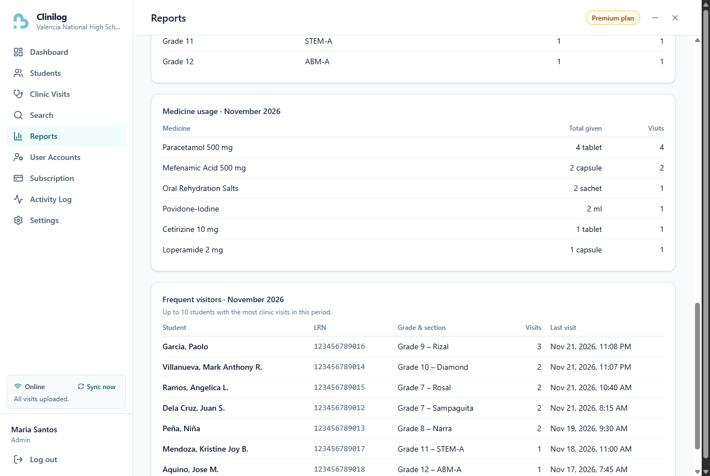
Part of a detailed report: medicine usage and frequent visitors.
The printed or PDF report shows only the report itself, with the school name, period, who prepared it and when, without the sidebar or buttons.
9.Administrator: first-time setup ADMIN
When Clinilog is first set up, the school already has one administrator account (admin), a 12-month Basic plan, 12 sample sections (Grades 7–12) and 6 common medicines. Before the clinic starts using it:
Log in as the administrator with the password your Clinilog provider gave you.
Settings → Sections: make the list match your school's real sections. Rename, add or delete the samples (section 13).
Settings → Medicines: make the list match the clinic's real stock, with the right unit for each (tablet, capsule, sachet, ml…).
User Accounts: add an account for each nurse with the role Staff (section 10). Give each person their password privately.
Optional: if you prefer a personal admin login, add your own Admin account, log in with it and disable the shared admin account.
Subscription: check the plan and its end date (section 11).
Install Clinilog on each clinic PC (section 2). Students are then added as they come to the clinic.
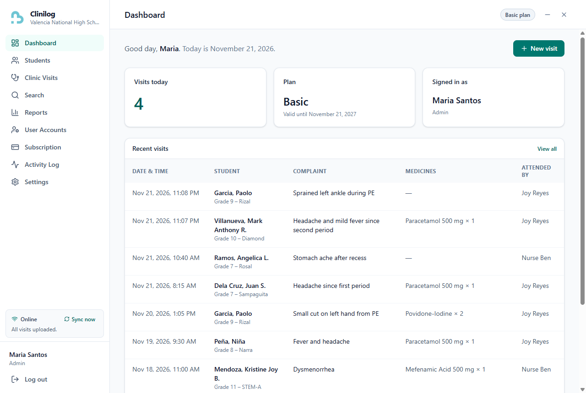
The administrator's Dashboard, with the four extra admin pages in the sidebar.
10.User Accounts ADMIN
Each person who uses Clinilog should have their own account, so the records show who attended each visit.
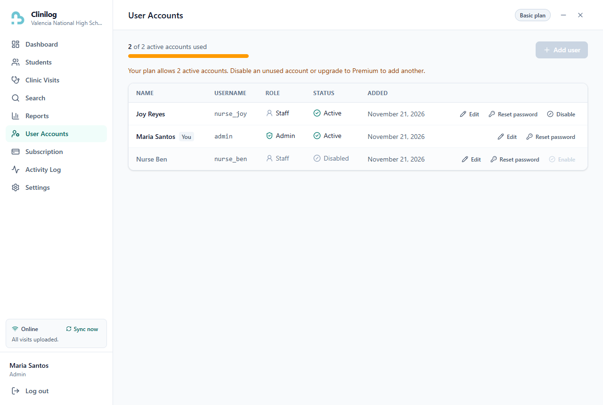
User Accounts on the Basic plan: 2 of 2 active accounts used, so Add user is unavailable until a slot is freed or the plan is upgraded.
Adding a user
Click Add user.
Enter the Full name and a Username (4–30 letters, numbers or underscore, for example nurse_ana).
Choose the Role: Staff for nurses, Admin for people who manage the system.
Type a Password (at least 8 characters with a letter and a number) and type it again in Confirm password.
Click Add user, then tell the person their username and password in person.
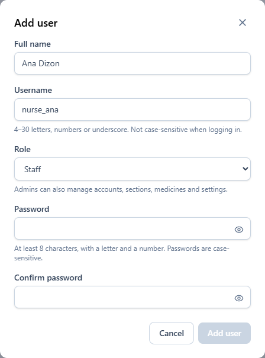
The Add user form.
Managing existing users
Button
What it does
Edit
Change the person's full name or role. (Usernames can't be changed.)
Reset password
Set a new password for someone who forgot theirs. It also unlocks an account locked after 5 wrong passwords. You can reset your own password the same way.
Disable
Stops the person from logging in (for example someone who left). They are logged out straight away. Their past visits stay in the records. Disabling frees a slot on your plan.
Enable
Lets a disabled person log in again (needs a free slot on your plan).
Safety rules. You can't disable your own account or remove your own admin role, and the school always keeps at least one active admin, so nobody can lock the school out by mistake.
Plan limits. Only active accounts count: Basic allows 2, Premium allows 10.
11.Subscription ADMIN
Free trial. A new school starts with a free 30-day trial of the Basic plan. A blue banner shows how many days are left. To keep using Clinilog afterwards, choose a plan and pay before the trial ends. Paying for Basic during the trial starts after the trial ends, so you don't lose any trial days.
This page shows your school's plan and lets you renew, upgrade or switch plans. You pay with GCash by scanning a QR code, then send the receipt. Clinilog checks the payment, and your plan changes once it is approved.
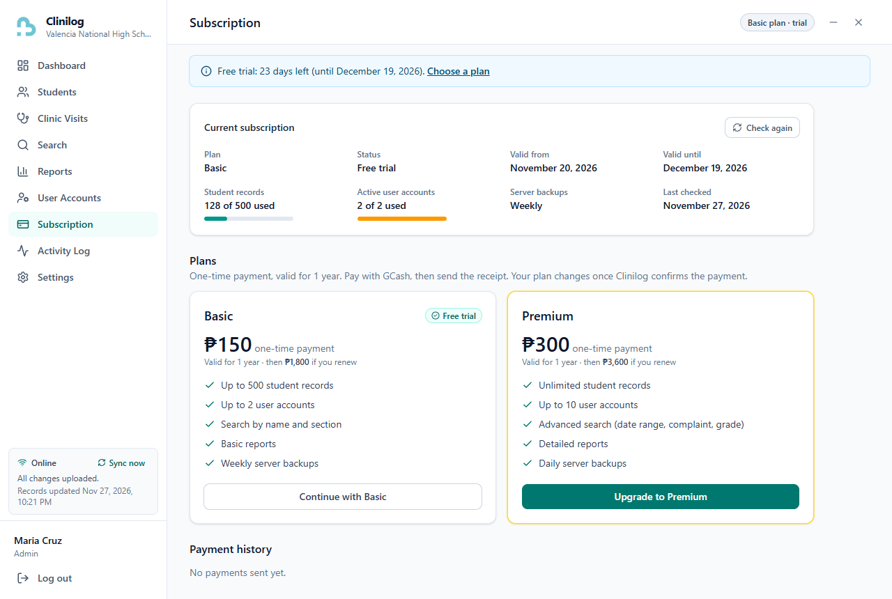
Current subscription (top), the plans you can choose, and your payment history (bottom).
Prices
Every payment is a one-time payment that keeps the plan for 1 year. Nothing is charged automatically. When the year is up, you decide whether to renew.
Plan
Your school's first payment
Each payment after that
Basic
₱150
₱1,800
Premium
₱300
₱3,600
The first-payment price applies once per school: to the first payment Clinilog approves. Renewing, or switching between Basic and Premium after that, costs the regular price. The plan cards always show what your school pays now.
Paying for a plan
On a plan card, click Renew … (your current plan), Upgrade to Premium or Switch to Basic. A window shows the QR code and the exact amount to pay.
Open GCash on your phone, tap QR, and scan the code on the screen. Pay exactly the amount shown.
Take a screenshot of the GCash receipt on your phone and copy it to this computer (for example by email or Messenger).
Type the reference number from the receipt (shown as Ref No.). Spaces don't matter.
Click Choose image and pick the receipt screenshot. Both the reference number and the screenshot are required.
Click Send for review.
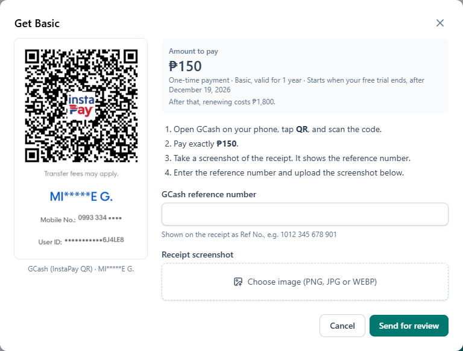
The payment window: QR code and amount (left), reference number and receipt (right).
After you send it
Your plan does not change straight away. The page shows Payment waiting for review while Clinilog matches your reference number and receipt with the payment it received. The page checks for the answer every minute, so you can leave it open or come back later.
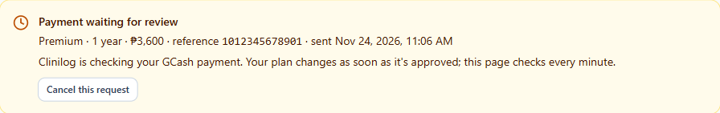
A payment waiting for review.
Status
What it means
Waiting for review
Clinilog hasn't checked it yet. You can't send another payment until it's reviewed. If you entered the wrong reference number or picked the wrong screenshot, click Cancel this request and send it again.
Approved
The payment matched. Your new plan applies straight away for everyone, and the period is shown in Payment history.
Not approved
The payment couldn't be matched. The reason is shown on the page. If you did pay, check the reference number and receipt, then send it again.
Cancelled
You withdrew it before it was reviewed.
Pay the exact amount. Each reference number can only be used once. Keep your GCash receipt until the payment is approved.
If you…
When approved, the new period…
Renew the same plan while it's still active
Is added on: it starts the day after the current one ends.
Switch plans (Basic ↔ Premium)
Starts on the day it's approved and replaces the old plan.
Renew after the plan has expired
Starts on the day it's approved.
Clinilog warns everyone when the plan ends within 14 days. If it expires, records can still be viewed but not changed until it's renewed (section 15). The page also shows how many students and active accounts you're using compared with your plan's limits.
12.Activity Log ADMIN
The Activity Log is a permanent record of who did what, as required for handling student health data.
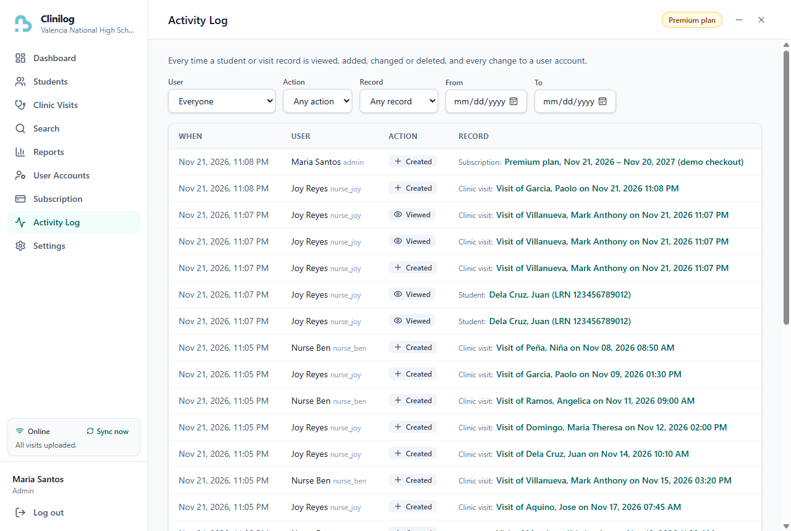
Newest activity first.
It records every time a student or clinic visit record is viewed, created, changed or deleted, every change to a user account, and every payment sent or cancelled on the Subscription page.
Filter by User, Action (Viewed / Created / Changed / Deleted), Record type and a date range; Clear removes the filters.
The log is split into pages. The bar at the bottom shows which entries you're looking at, for example Showing 101–125 of 250 entries.
Click a record's name to open it. Deleted record means it has since been removed.
The log can't be edited or deleted from the app.
Moving between pages
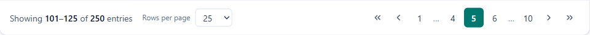
The page bar at the bottom of the log.
Page numbers: click one to go to that page; the current page is highlighted. With many pages, … stands for the pages in between.
‹ › previous / next page; « » first page (newest activity) / last page (oldest).
Rows per page: show 25, 50 or 100 entries at a time. This PC remembers your choice.
Changing a filter goes back to page 1. To find something from a particular day, the date filters are quicker than paging through.
13.Settings: sections and medicines ADMIN
Sections
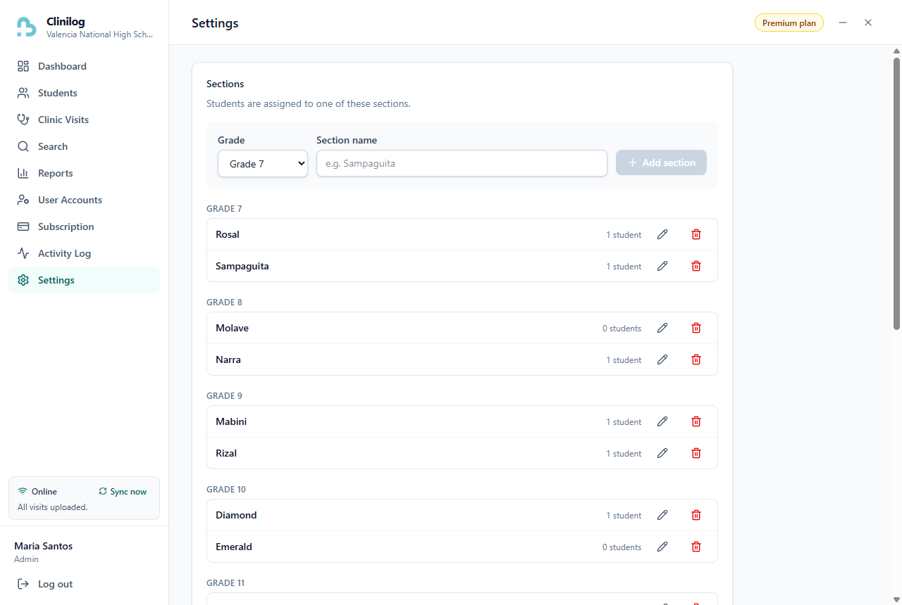
Sections grouped by grade, with how many students are in each.
Add: choose the grade, type the section name and click Add section.
Rename: click the pencil, type the new name and press Enter (or the check mark). Esc cancels.
Delete: click the bin and confirm. A section that still has students can't be deleted; move its students to another section first (edit each student).
Medicines
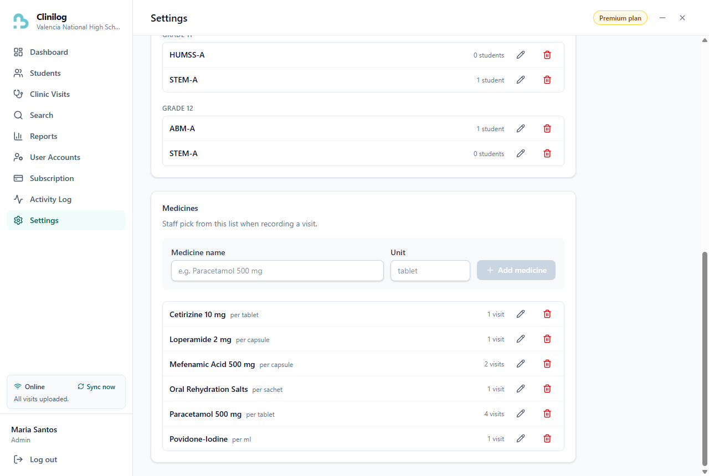
The medicine list staff choose from when recording a visit.
Add: type the name (for example Paracetamol 500 mg) and the unit (tablet, capsule, sachet, ml…), then click Add medicine.
Edit: click the pencil to change the name or unit.
Delete: possible only for medicines never given in a visit. A medicine already used can't be deleted, but you can rename it.
14.Working without internet (offline mode) ALL USERS
Every clinic PC keeps its own copy of your school's records. When the internet goes down, Clinilog keeps working almost as usual: what you do is saved on the PC and uploads by itself when the connection returns. You don't need to switch anything on.
Set up each PC once, while online
A PC can only work offline after it has downloaded the school's records once. Do this on every clinic PC after installing or updating Clinilog:
Make sure the PC is connected to the internet.
Open Clinilog and log in with any account of your school.
Wait until the connection card in the sidebar shows "Records updated" with a date and time. This usually takes less than a minute.
That's all. From then on, the PC downloads what changed on the other PCs about every 30 seconds whenever it's online and someone is logged in. That includes new students, visits, sections, medicines and user accounts. The copy stays on the PC when you log out or close Clinilog, and it's encrypted, so it can only be read through Clinilog.
The connection card
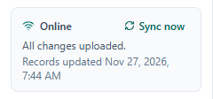
Online: everything is uploaded.
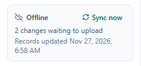
Offline: 2 changes are waiting to upload.
Online / Offline: whether Clinilog can reach the server right now.
All changes uploaded or N changes waiting to upload: your changes that haven't reached the server yet. Need attention in red means the server refused one (see below).
From other staff: changes another person made on this PC. They upload when that person logs in here while online.
Records updated …: when this PC last downloaded the latest records.
Sync now: checks the connection, uploads and downloads straight away instead of waiting.
Logging in without internet
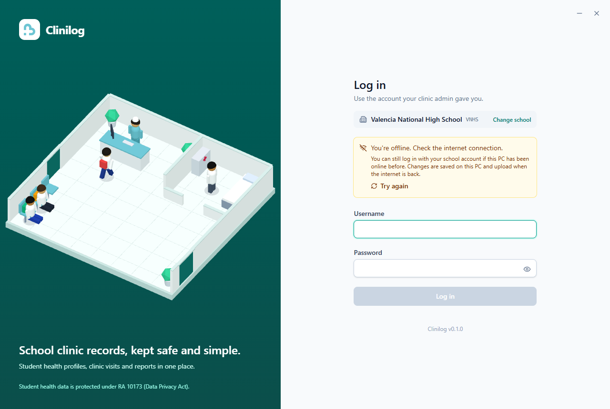
No internet: the login screen says so straight away, and you can still log in.
The login screen shows "You're offline" right away. There's nothing to wait for.
Type your username and password as usual, and click Log in.
This works for every active account of your school, even one that has never been used on this PC, as long as the PC was set up once while online.
If it says "this account isn't saved on this PC yet", the PC hasn't been set up. Connect it to the internet and log in once.
A new account or a password reset reaches each PC the next time that PC is online. Until then, an offline PC still expects the old password, and a brand-new account can't log in on it yet.
A disabled account stops working on each PC the next time that PC is online.
5 wrong passwords lock the login for 5 minutes, the same as online.
When the internet comes back, the login screen notices by itself within about 10 seconds.
What works offline
Works offline
Needs the internet
Dashboard
Students: search, view, add, edit (and delete, for admins)
Clinic Visits: record, view, edit, delete
Search
Reports, including Print and Save as PDF
Settings: sections and medicines (admins)
User Accounts: adding, disabling or resetting passwords. Offline, admins see the last copy, view-only.
Activity Log: offline, admins see the last copy.
Subscription and payments
Offline, Clinilog checks everything the same way the server does: the same field rules, duplicate-LRN warnings and permissions.
While you're offline
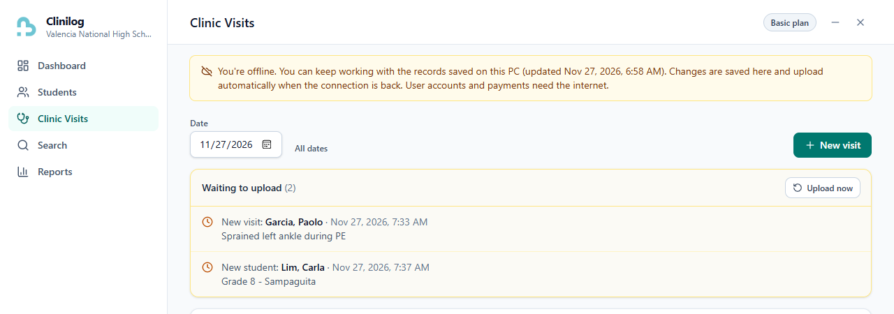
Offline: a yellow banner explains it, and your changes are listed under Waiting to upload.
A yellow banner at the top says you're offline and when the records were last updated.
Whatever you save shows up right away in the lists, and also under Waiting to upload on the Dashboard and the Clinic Visits page.
Visits keep the date and time they were recorded, and the name of the nurse who recorded them.
Changes made on other PCs while you're offline don't show until this PC is back online.
When the connection returns
Waiting changes upload by themselves within about 30 seconds, in the order they were made. To do it straight away, click Sync now on the card or Upload now in the Waiting to upload box.
The yellow banner disappears, the card shows All changes uploaded, and changes made on other PCs download.
If the server can't accept a change, it is marked needs attention with the reason. For example, the student was deleted on another PC, or another PC used the same LRN in the meantime. Fix the cause, then click Try again, or Discard it.
If two PCs changed the same record while offline, the change that uploads last is the one kept.
Changes are never lost by logging out or closing Clinilog. They stay on the PC, but they only upload when the person who made them logs in on that PC while online, so each change is credited to the right person. If you work offline, log in again once the internet is back.
If the server can't be reached at all, Clinilog keeps using your school's last known plan for up to 7 days. After that, records are view-only until the PC reconnects.
15.Plans, limits and an expired subscription ALL USERS
Feature
Basic
Premium
Student records
Up to 500
Unlimited
Active user accounts
2
Up to 10
Search
Name / LRN and section
+ grade, date range and complaint words
Reports
Visits per month, most common complaints
+ by grade & section, medicine usage, frequent visitors
Server backups
Weekly
Daily
Price (GCash, one-time payment for 1 year)
₱150 first payment, then ₱1,800
₱300 first payment, then ₱3,600
Premium-only items stay visible but locked on Basic, marked with a lock and a Premium badge. Clicking one explains what Premium adds.
If the subscription or free trial expires
Everyone sees a red banner: "Your subscription has expired."
All records can still be viewed, searched and reported on. Nothing is deleted.
Adding or changing records is paused until an administrator renews (Renew now in the banner) and the payment is approved.
Administrators can still reset passwords and disable accounts while it's expired.
16.Rules for each field ALL USERS
Clinilog checks every field as you type (a red message under the field, and the Save button stays grey) and checks again on the server. Spaces at the start and end are ignored.
Field
Rule
LRN
Required. Exactly 12 digits (no spaces or dashes). Must not already be used by another student in your school.
First / last name
Required, 1–50 characters: letters (ñ and accents allowed), spaces, hyphen (-), apostrophe (') and period (.).
Middle name
Optional; same characters as above.
Gender
Required; choose from the list.
Birthdate
Required; a real date, not in the future, giving an age of 4 to 25.
Grade & section
Required; choose from the list (admins manage it in Settings).
Visit date and time
Filled in automatically when the visit is saved.
Complaint
Required, 3–500 characters.
Treatment
Required, 1–500 characters.
Medicine quantity
Whole number from 1 to 100. Up to 20 medicines per visit, each listed once.
Username
4–30 letters, numbers or underscore. Unique in your school. Capital letters don't matter when logging in.
Password
At least 8 characters with at least one letter and one number. Capital letters do matter.
17.Troubleshooting and questions ALL USERS
What you see
What to do
"Connecting to server…" for a long time
The server wakes up the first time each day; wait up to about a minute. If it then says it can't reach the server, check the PC's internet and click Try again. You can still log in offline meanwhile.
"You're offline" on the login screen
The PC has no internet. You can still log in and work (section 14). The message clears by itself when the internet is back.
Offline: "this account isn't saved on this PC yet"
This PC has never downloaded the school's records, or the account was added after its last download. Connect the PC to the internet and log in once.
Offline: the right password is refused
The password was changed or reset, and this PC hasn't been online since. Use the old password, or connect the PC to the internet first.
"Too many failed attempts"
Wait for the countdown (5 minutes), or ask an administrator to reset your password.
Forgot password
Ask an administrator: User Accounts → Reset password.
"Your account is no longer active"
An administrator disabled your account. Ask them to enable it.
"This installation has no school ID"
The app wasn't installed from the school's installer. Reinstall it with the installer from your Clinilog provider.
Save button stays grey
A field still has a problem; look for the red message under a field.
"Already registered to …" on the LRN
That student already exists. Click their name to open their record instead of adding them again.
"Possible duplicate"
Another student has the same name and birthdate. Check, then Save anyway only if it's a different person.
Can't delete a student
They have clinic visits on record; health records are kept.
Can't delete a section or medicine
The section still has students, or the medicine was used in a visit. Move the students first, or rename the medicine.
A lock or Premium badge
That feature is part of the Premium plan. An administrator can upgrade under Subscription.
"No school has that code"
Check the school code with your Clinilog provider. Spaces and capital letters don't matter.
The wrong school shows on the login screen
Click Change school and enter your school's code.
"Your free trial has ended"
An administrator chooses a plan and pays under Subscription (section 11). Records stay viewable meanwhile.
Paid, but the plan hasn't changed
The payment is still waiting for review; the plan changes once it's approved. If it says Not approved, read the reason, then send the correct reference number and receipt again.
"This reference number was already sent"
Each GCash reference can be used once. Check you typed the number from this payment's receipt.
Add student / Add user is unavailable
The plan limit is reached (500 students or 2 accounts on Basic), or the subscription has expired.
Changes stay in "Waiting to upload"
Check the internet, then Upload now. If one says it needs attention, read the reason, then Try again or Discard.
"Your password or account changed since you logged in"
Log out and log in again with your current password. Waiting changes are kept and will upload.
"Windows protected your PC" when installing
Click More info → Run anyway.
18.Privacy and good practice ALL USERS
Clinic records are sensitive personal information under the Data Privacy Act of 2012 (RA 10173). Clinilog protects them (encrypted connections, hashed passwords, an encrypted offline copy, and an activity log), but good habits matter too:
Use only your own account. Never share passwords; the records show who did what.
Log out, or lock Windows with ⊞ Win + L, whenever you leave the PC.
Open records only when needed. Every view of a student or visit is recorded in the Activity Log.
Handle printouts and PDFs carefully. Store them securely and shred paper copies you no longer need.
Keep the student list accurate. Search before adding a student to avoid duplicates, and correct details when they change.
Administrators: disable accounts of people who leave the clinic straight away, and check the Activity Log from time to time.
19.Quick reference
Nurse: every clinic visit STAFF
New visit (Dashboard or Clinic Visits).
Type the student's name or LRN → pick them. Not found? Students → Add student first.
Complaint → Treatment → Add medicine if any.
Save visit.
Nurse: other everyday tasks
Student's history: Students → click the name.
Fix your visit: open it → Edit.
Monthly summary: Reports → month → Print / Save as PDF.
Offline? Keep working as usual; changes upload by themselves. Check the sidebar card later.
Leaving the PC: Log out.
Administrator tasks ADMIN
New nurse: User Accounts → Add user → Role: Staff.
Forgotten password / locked out: User Accounts → Reset password.
Someone leaves: User Accounts → Disable.
New clinic PC: install, enter the school code, log in once while online.
New school year sections: Settings → Sections.
New medicine in stock: Settings → Medicines.
Wrong visit: open it → Delete, then record it again.
Renew or upgrade: Subscription → plan → pay with GCash → send reference number and receipt → wait for approval.
Who looked at a record? Activity Log → filter.
Window buttons
– minimize · × close (top-right corner)
Need help? Contact your Clinilog provider. Tell them what you were doing and copy the exact message you saw.